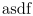
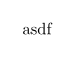
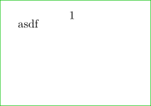

Syntax (autogenerated)
| \startTEXpage[...=...,...] ... \stopTEXpage | |
| ...=...,... | inherits from \setupfittingpage |
| instance of startfittingpage, generated by \definefittingpage | |
Syntax
| \startTEXpage | |
| \startTEXpage[...=...] | |
| strut | no yes global local |
| align | normal flushleft flushright middle normal high low lohi |
| offset | none overlay dimension |
| width | fit dimension |
| height | fit dimension |
| frame | on off |
Description
Start a page that fits its contents exactly. Or has some extra space around the edges, if you specify offset.
It only works, if the contents is small enough. If it's too big, then you should use something like "\startTEXpage[align=normal,width=100cm,autowidth=force]"
Example
-
\showframe \startTEXpage asdf \stopTEXpage
- 
-
\showframe \startTEXpage[offset=10pt] asdf \stopTEXpage
- 
-
\setuppapersize[A10, landscape] \showframe[] \starttext asdf \stoptext
- 
See also
- \startTEXpage — a page just large enough to fit its contents: containing TeX
- \startpagefigure — a page just large enough to fit its contents: containing a figure, possibly with some text underneath
- \startMPpage — a page just large enough to fit its contents: containing MetaPost
- page-app.mkiv , page-app.mkii
Help from ConTeXt-Mailinglist/Forum
All issues with: